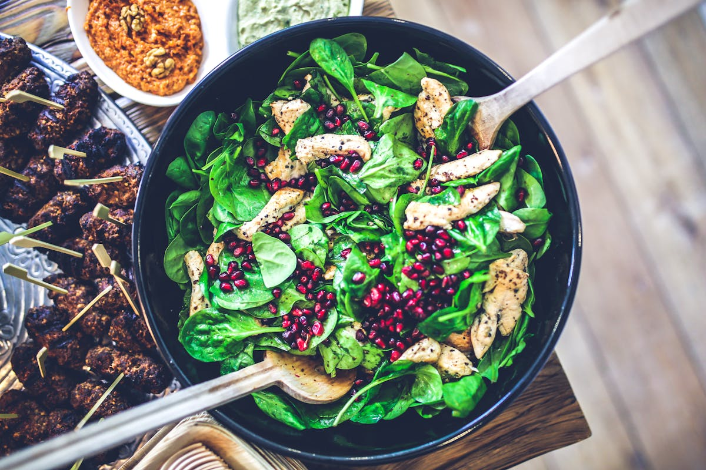

Como ler rótulos alimentares
Entenda porções, ingredientes e escolha opções com menos adição de açúcares e gorduras saturadas.
Ler mais → NutriVida
NutriVida
Segundo relatório das Nações Unidas divulgado em janeiro deste ano, ‘Panorama regional de la seguridad alimentaria y nutricional - América Latina y el Caribe 2022’, a insegurança alimentar moderada no Brasil aumentou em 10% entre os anos de 2019 e 2021. Apesar de apresentar as taxas mais baixas de subnutridas da região, com 4,1%, devido a sua alta população absoluta, essa porcentagem equivale a 8,6 milhões de pessoas - a maior quantidade total da América Latina e Caribe.
Entenda porções, ingredientes e escolha opções com menos adição de açúcares e gorduras saturadas.
Ler mais →Dicas para comprar com inteligência e montar refeições nutritivas gastando menos.
Ler mais →